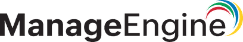
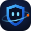

Tecnologia e segurança em um só ecossistema, do diagnóstico à operação contínua.
Avaliamos, desenhamos, implementamos e operamos sua cloud, seus custos, sua segurança e suas iniciativas de IA, com produtos próprios e parceiros oficiais no mesmo contrato.
Assessment de 40 h incluso em contratos acima de R$ 15.000 · resposta em até 24 h

Médias dos projetos conduzidos pelo time Nexalytix.
Três portas de entrada para o mesmo ecossistema
Quero proteger, modernizar ou reduzir custos da minha operação
Assessment, consultoria, implementação e sustentação para cloud, FinOps e segurança.
Ver serviços → Profissionais e timesQuero capacitar meu time ou minha carreira
Trilhas técnicas, formação corporativa e capacitação depois de cada projeto.
Conhecer a Academia → ParceirosQuero indicar clientes, revender ou somar ao ecossistema
NexaFriends, freelancers, revendas e fabricantes, com regras claras de cada modelo.
Ver programa de parceiros →Seis pilares, uma operação
A maioria dos fornecedores cobre um pedaço. Aqui, custo de nuvem, segurança, IA e sistemas de gestão conversam no mesmo plano.
Cloud
Migração e modernização multi-cloud em AWS, Azure e GCP, com redes e continuidade.
Cloud e Infraestrutura →Segurança
Segurança ofensiva e defensiva: SIEM, identidades e acessos, proteção de endpoints e DevSecOps.
Segurança →Transformação Digital e IA
Agentes de IA, automação de documentos e processos e estratégia de IA com governança.
Ver IA →Serviços de TI e Segurança
Monitoramento, suporte de TI e manutenção preventiva e corretiva operados pelo nosso time.
Sustentação e Manutenção →O ciclo completo, com um único parceiro
Assessment
Pontos fortes e melhorias do seu ambiente sob as lentes de negócio, tecnologia e cultura, com roadmap priorizado.
Ver etapa →Consultoria
Arquitetura, estratégia de cloud e FinOps e liderança técnica sob demanda.
Ver etapa →Implementação
Migração, automação CI/CD, integrações e segurança desde o primeiro sprint.
Ver etapa →Sustentação e Manutenção
Operação contínua: monitoramento, suporte de TI, manutenção preventiva e corretiva, FinOps e segurança.
Ver etapa →A sustentação gera dados que alimentam o próximo assessment: o ciclo recomeça mais maduro.
Assessment de 40 horas incluso no seu primeiro contrato
Ao contratar qualquer serviço acima de R$ 15.000, você recebe um assessment completo da sua infraestrutura, entregue em até 10 dias.
Valor equivalente: R$ 8.500 · sem letras miúdas
Não sabe por onde começar? Responda 2 perguntas
Certificações ativas e frameworks aplicados com critério
Nosso time mantém certificações nas principais nuvens e disciplinas de operação. Dados de clientes e leads são tratados conforme a LGPD.
Certificações do time
Frameworks
Todas as frentes conectadas em torno do seu negócio
No centro, o seu negócio. Ao redor, o ciclo de serviços. Por fora, as soluções que entregamos e as frentes que ampliam o ecossistema. Escolha um objetivo ou clique em uma frente para ver como ela se conecta às outras.
Passe o mouse em um domínio para ver o ciclo e os habilitadores que ele usa. Clique para ver o que entregamos em cada etapa.
O que entregamos em cada domínio, etapa por etapa
Clique em um domínio ou em uma etapa para ver os detalhes.
Três jornadas típicas pelo ecossistema
Exemplos ilustrativos de como os problemas mais comuns atravessam várias frentes.
Varejo com a conta de nuvem fora de controle
- Assessment
- →
- Consultoria FinOps
- →
- Implementação
- →
- FinOps contínuo
O diagnóstico mostra onde está o desperdício, a consultoria define a governança e a sustentação impede que o custo volte a subir.
Empresa sem backup confiável
- Assessment
- →
- Acronis
- →
- Implementação
- →
- Sustentação e Manutenção
- →
- Academia
Produto de parceiro implementado e operado pelo nosso time, com o time do cliente capacitado para o dia a dia.
Startup lançando um produto digital
- CTO as a Service
- →
- Desenvolvimento
- →
- Cloud
- →
- Marketing Digital
Liderança técnica, produto construído com segurança desde o design, infraestrutura que escala e aquisição dos primeiros clientes.
Um contrato, uma visão da sua operação
Menos fornecedores para coordenar e ninguém culpando o outro quando algo falha.
Onde testamos o que vem depois
Provas de conceito com IA generativa aplicada, novos produtos SaaS e novos modelos de negócio. Os projetos que funcionam viram frentes do ecossistema.
Em estruturaçãoDo diagnóstico à operação, em quatro etapas
Contrate uma etapa isolada ou o ciclo completo. Cada engajamento parte de uma baseline e termina com métricas claras: custo, latência, MTTR e lead time.
Do projeto fechado à operação recorrente
Arquitetos que já operaram ambientes de missão crítica
Mais de 50 anos de experiência somados no núcleo técnico, com passagem por fintechs, healthtechs, mídia e varejo digital.
Preciso contratar o ciclo completo?
Não. Cada etapa pode ser contratada isoladamente. O ciclo completo reduz retrabalho porque o mesmo time carrega o contexto de uma etapa para a outra.
Vocês atendem empresas pequenas?
Sim. Atendemos pequenas, médias, startups e grandes empresas, com escopo proporcional ao problema.
Como funciona o Assessment de 40 horas?
Em contratos acima de R$ 15.000, ele vem incluso. São 40 horas de diagnóstico técnico, análise de maturidade e roadmap, entregues em até 10 dias.
Com quais nuvens vocês trabalham?
AWS, Azure e GCP, além de ambientes híbridos e Omid Cloud.
Soluções / Transformação Digital e IA
Transformação Digital e IA · serviço e produtoIA aplicada ao que move o seu negócio: processos, documentos e atendimento
Descobrimos onde a IA gera retorno, construímos a solução integrada aos seus sistemas e mantemos tudo funcionando com segurança, governança e LGPD.
Onde a IA costuma destravar resultado
Time gastando horas com documentos, e-mails e digitação
Atendimento e vendas que não respondem fora do horário
Conhecimento da empresa espalhado e difícil de encontrar
Pilotos de IA que não saem do teste ou sem regras de uso
Da estratégia à operação
Passo a passo
- Descoberta de casos de usoMapeamos processos e escolhemos onde começar.
- Prova de conceitoEscopo curto e métrica de sucesso definida antes de começar.
- Implantação integradaSolução conectada a CRM, ERP, documentos e canais de atendimento.
- Operação e melhoria contínuaMonitoramento de qualidade, custos e segurança na sustentação.
Prontos para usar, configurados para você

Assistente de IA Nexalytix
O mesmo assistente deste site, treinado com o conteúdo da sua empresa, com captação de leads direto no CRM.
Transcribe
Transcrição automática de áudios e vídeos com IA, para reuniões, atendimentos e conteúdo.
Agendar demonstração →Hyland: conteúdo e agentes de IA
Gestão de documentos, captura inteligente (IDP), descoberta de conhecimento e agentes de IA sobre o conteúdo corporativo.
Falar sobre Hyland →Produtos próprios, parceiros oficiais e frentes especializadas
Tudo o que você pode comprar como produto, plataforma ou frente dedicada. Qualquer solução pode vir com implementação e sustentação do nosso time.
Formação técnica para quem constrói e protege a operação
Trilhas em cloud, FinOps, segurança e operação, ensinadas por quem aplica esses frameworks em produção. Para profissionais, para o time dos nossos clientes e para quem quer entrar na área.
Em estruturação · primeiras turmas em planejamentoQuatro trilhas ligadas ao que entregamos
Cloud e FinOps
Arquitetura multi-cloud, governança de custos e Cloud Adoption Framework.
Segurança da Informação
Segurança ofensiva e defensiva, gestão de vulnerabilidades e DevSecOps.
DevOps e SRE
CI/CD, observabilidade, confiabilidade e resposta a incidentes.
Infraestrutura e Redes
Conectividade híbrida, backup, continuidade e infraestrutura crítica.
Capacitação que acompanha o projeto
Entre na lista de espera
Avisamos quando a turma da sua trilha abrir.
Cresça junto com um ecossistema completo de tecnologia
Indique clientes, some seu talento a projetos ou leve nossas soluções para a sua carteira. Cada modelo tem regras e benefícios próprios.
NexaFriends
Indique empresas que precisam de tecnologia e faça parte da comunidade Nexalytix.
Quero indicar →Freelancers e especialistas
Compartilhe seu portfólio e participe de projetos do ecossistema.
Enviar portfólio →Revendas e integradores
Leve nossos SaaS e serviços para a sua carteira, com suporte pré-venda.
Ser revenda →Fabricantes
Alianças para que sua tecnologia chegue ao cliente com implementação e operação.
Propor aliança →Do cadastro à primeira oportunidade
- CadastroVocê preenche o formulário com seu modelo de parceria.
- QualificaçãoConversa com o nosso time para alinhar perfil, região e interesse.
- OnboardingApresentação do ecossistema, materiais de venda e capacitação.
- Primeira oportunidadeRegistro da oportunidade e acompanhamento conjunto até o fechamento.
Parceiros que usamos na nossa própria operação
Quero ser parceiro
Respondemos em até 5 dias úteis.
Conteúdo técnico para decidir melhor sobre tecnologia
Análises, alertas e casos reais sobre cloud, FinOps e segurança, escritos pelo time que opera esses ambientes.
Insights
Artigos sobre arquitetura, custos de nuvem e operação.
Primeiras publicações em produçãoRadar
O que está mudando no mercado de tecnologia e o que isso significa para você.
Primeiras publicações em produçãoAlertas de segurança
Boletins curtos sobre vulnerabilidades relevantes e como agir.
Primeiras publicações em produçãoCases
Desafio, frentes do ecossistema usadas e resultado em números.
Primeiras publicações em produçãoReceba os conteúdos por e-mail
Um resumo mensal com os artigos, alertas e cases publicados.
Construímos a infraestrutura invisível que sustenta produtos digitais sérios
A Nexalytix nasce da convicção de que excelência operacional é uma vantagem competitiva subestimada. Reunimos arquitetos, SREs e especialistas em FinOps para entregar engenharia, não apresentações.
Tornar operações tecnológicas previsíveis, eficientes e seguras, para que negócios possam focar no que importa.
Ser referência latino-americana em consultoria técnica de elite, com práticas que combinam rigor, autonomia e velocidade.
Cloud Adoption Framework, SRE, FinOps e DevOps aplicados com critério ao contexto de cada cliente. Sem cópia de receita.
Conexão, inteligência e o diferencial
Princípios que regem cada engajamento
Parte de um grupo de negócios que opera o que recomenda
A Nexalytix integra o Grupo Vieira Prime, que reúne empresas de serviços, varejo e alimentação. Nossas soluções nascem e são testadas na operação real do grupo.
Quer fazer parte do time?
Conte o que você precisa, e o time certo responde
Escolha o assunto para seu contato ir direto para quem resolve.
Resposta em até 24 h
Em dias úteis. Contatos de emergência são priorizados.
contato@nexalytix.com.brPrefere conversar agora?
A Alya, nossa assistente com IA, tira dúvidas e passa seu contato para o time.
Sede operacional
São Paulo, SP